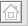
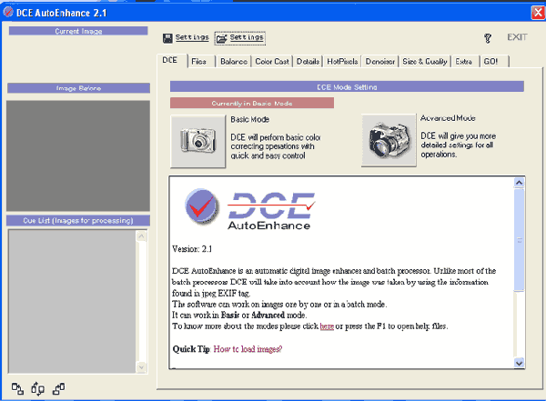

Бизнес-сайт. Системы управления контентом
Автор: Иван Косяков
Опубликовано 12 ноября 2002 года

Определения
Сначала необходимо определиться с используемыми нами терминами, в частности, по рекомендации Петра Кутиса (Actis Systems) необходимо разделить понятия "система управления контентом" и "система управления сайтом".
Actis Systems:
- Контент — это любая информация, графическая или текстовая, размещенная на сервере.
- Система управления контентом — это система управления информацией на сайте.
- Система управления сайтом — это система, которая позволяет управлять информацией на сайте, вносить изменения в дизайн сайта и осуществлять изменение структуры сайта.
- Wega: Система управления контентом — это система, с помощью которой владелец может управлять содержанием своего ресурса, не прибегая при этом к услугам профессиональных html-верстальщиков и программистов.
- АИСТ: Система управления контентом — это система, позволяющая автоматизировать управление сайтом: его содержимым, структурой, дизайном. На профессиональном сленге такие системы обычно называют движком сайтов.
- ДиалогСибирь-ИТ: Система управления контентом — это специализированное программное обеспечение для автоматизированной разработки и поддержки динамических сайтов. Эти системы позволяют разрабатывать и поддерживать сайты, не требуя при этом знания HTML.
Типы построения сайта
Actis Systems: По способу управления можно выделить три типа сайтов:
- Первая группа — это статическая Web-страница, которую, как правило, делает IT-специалист, а затем, при необходимости, он же и вносит туда изменения.
- Ко второй группе следует отнести сайты, на которых администратор может самостоятельно изменять содержание, но не его структуру и дизайн.
- К третьей группе относятся системы, позволяющие администратору вносить изменения в структуру сайта, добавлять и удалять разделы и, конечно, в рамках дизайна и навигации.
Принципы работы системы управления контентом
АИСТ: Я бы разделил системы управления контентом на два типа:
- системы первого типа подразумевают хранение данных в базе данных, XML-документе или других, внутренних форматах; страницы, как правило, генерируются “на лету”, т.е. по параметрам, подаваемым на скрипт вывода, или по адресу запрашиваемой страницы (URL) из базы данных получаются необходимые данные, форматируются, и выводится содержимое страницы;
- системы второго типа обеспечивают редактирование страниц сайта в специальном редакторе, получая “на выходе” HTML-файлы, которые потом выкладываются на сайт; такого рода системы могут быть установлены как на Web-сервере, так и на локальном компьютере (в этом случае набор страниц нужно закачать на сайт)
Второй тип систем представляет собой некий гибрид между первым типом и статическими сайтами. Его преимущества — отсутствие загрузки сервера (ему не нужно тратить ресурсы на исполнение программ, запросов к базе данных и пр., а только передать содержимое страницы), возможность внести изменения вручную в какую-либо страницу. Преимущества же первого типа систем — мощность, возможность реализовать различные функционалы (например, поиск по каталогу товаров; фильтры, интерактивы и пр.), большее удобство в работе.
Actis Systems: Несмотря на то, что все системы управления контентом спроектированы по-разному, они предназначены для одной цели — обновления содержания сайта, и важную роль здесь играет модуль документооборота, входящий в систему управления сайтом.
